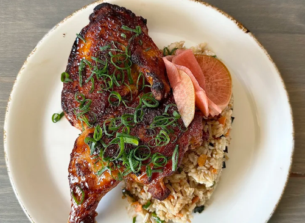
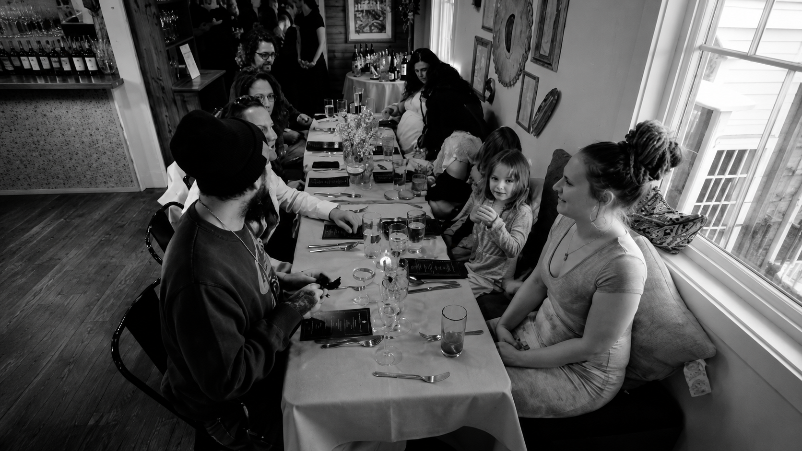
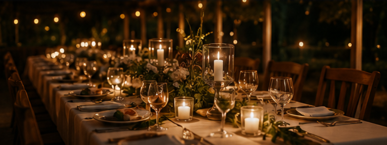

Dinner
Fresh. Local. Inspired.
Every dish is crafted with intention and inspired by the best of Maine's land and sea.
View Dinner Menu →
Seasonal Menus
Reflecting the best of each season
Locally Sourced
Ingredients from trusted partners
Expertly Prepared
Crafted with care and creativity
Perfectly Paired
Wines and cocktails to elevate every meal.

Lunch (Seasonal)
Light. Fresh. Made for Maine afternoons.
Enjoy seasonal midday dishes inspired by local farms, coastal flavors, and the relaxed beauty of Wiscasset.
View Lunch Menu →
Catering
Bring the Back River Bistro experience wherever you gather.
From intimate celebrations to larger gatherings, our catering brings thoughtful seasonal food, warm hospitality, and memorable details to your event.
Weddings
Corporate Events
Private Celebrations
Holiday Parties